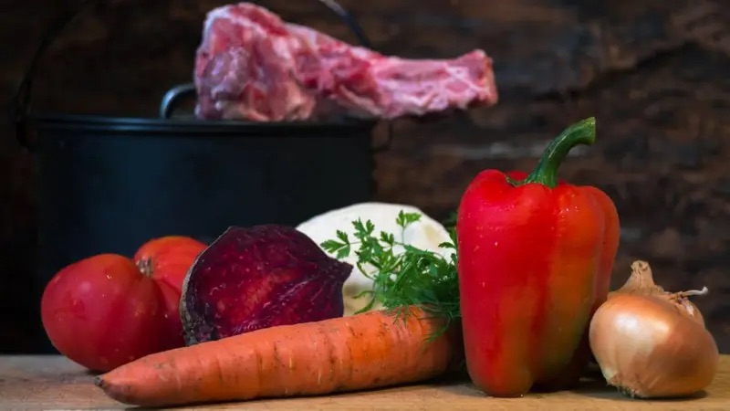

Щоб вам не казали і як би не переконували, але справжній український борщ - це той борщ, який варять у вашій родині.
В Україні існує десятки рецептів борщу. Вони варіюються у залежності від регіону. Але в кожного борщ асоціюється зі смаком дитинства - з борщем, який варила мама чи бабуся.
Пропонуємо вам класичний рецепт українського борщу. А також пропонуємо приготувати до нього пампушки з часником за нашим рецептом.
Інгредієнти:
- Свинячі кістки з м'ясом - 500 г
- Квасоля - 200 г
- Буряк - 1 шт
- Картопля - 3-4 шт
- Капуста - 0,5 маленької головки
- Морква - 1 шт
- Цибуля - 1 шт
- Томатна паста - 70 г
- Цукор - 1 ст. л
- Оцет - 1 ст. л.
- Сіль - до смаку
- Лимонний сік - до смаку
- Перець духмяний - 3-4 горошини
- Лавровий лист - 2 шт
- Часник - 2 зубці
- Олія - для смаження
- Сметана - для подачі
Крок І
Першим підготовчим етапом у приготуванні борщу є бульйон. Його можна зварити заздалегідь, бо цей процес займає кілька годин.
Свинину на кістці промийте. Залийте водою і варіть приблизно 2-3 години, знімаючи шумовиння, яке утворюватиметься на поверхні.
Вогонь має бути невеликий, а сам бульйон не має кипіти, щоб залишитися чистим і прозорим. Наприкінці готовності посоліть бульйон і додайте перець духмяний та лавровий листок.
Крок ІІ
Квасолю краще замочити у холодній воді на ніч - так вона швидше звариться. Якщо ви цього не зробили, тоді просто промийте, залийте водою і варіть до готовності. Коли квасоля буде м'якою, воду відцідіть.
Крок ІІІ
Буряк почистьте і натріть на крупній терці або поріжте брусочками - як вам смакує більше. Тушкуйте під кришкою на сковороді з невеликою кількістю олії до готовності. Періодично підливайте воду, щоби буряк не смажився, а саме тушкувався.
Крок ІV
Цибулю нарізати кубиками, тушкувати на невеликому вогні у невеликій кількості олії. Моркву крупно натерти на тертці. Додати до цибулі, тушкувати 2-3 хвилини, додати томатну пасту і тушкувати ще декілька хвилин.
Крок V
З бульйону дістати кістку і відокремити від неї м'ясо, порізати на невеликі шматки. Вкинути м'ясо назад у бульйон.
Крок VІ
Почистити і порізати картоплю невеликими кубиками. Вкинути у бульйон з м'ясом. Додати тонко пошатковану капусту, буряк та квасолю. Варити до м'якості картоплі.
Крок VІІ
Додайте цукор і оцет. В борщ всипати засмажку. Скуштувати - посолити до смаку, кислоту регулювати лимонним соком.
Довести до кипіння. Заправити розчавленим часником і вимкнути вогонь.
Крок VІІІ
Накрити кришкою і настоювати 15 хвилин перед подачею на стіл.
Подавати зі сметаною та пампушками з часником.
Хочете отримувати найважливіші новини в месенджер? Підписуйтеся на наш Telegram або Viber.